分镜样例总览
17 个片种，点卡片看分镜表
TVC 广告
山屿冷萃 ·《一瓶清醒》
30s · 16:9 · 12 镜 · 整片
审片：有备注通过
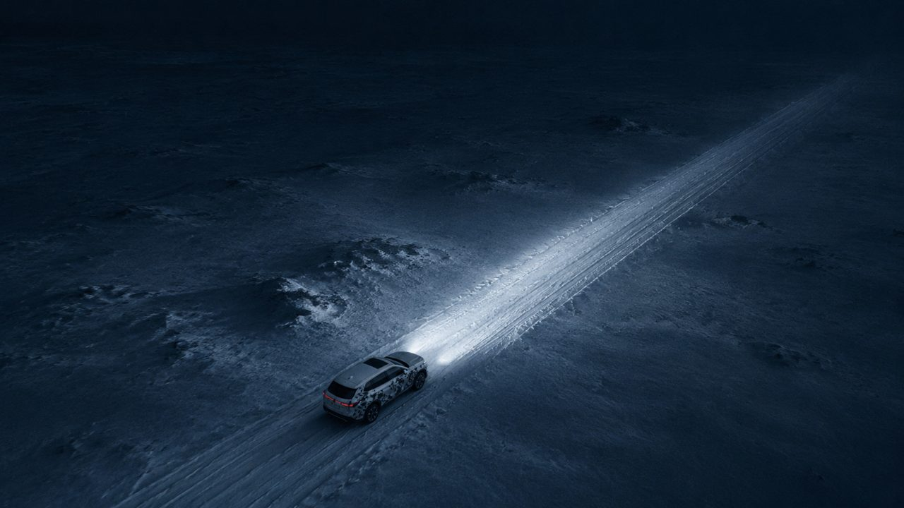
品牌形象宣传片
青禾新能源 ·《一度电能走多远》
90s · 16:9 · 39 镜 · 节选
审片：有备注通过
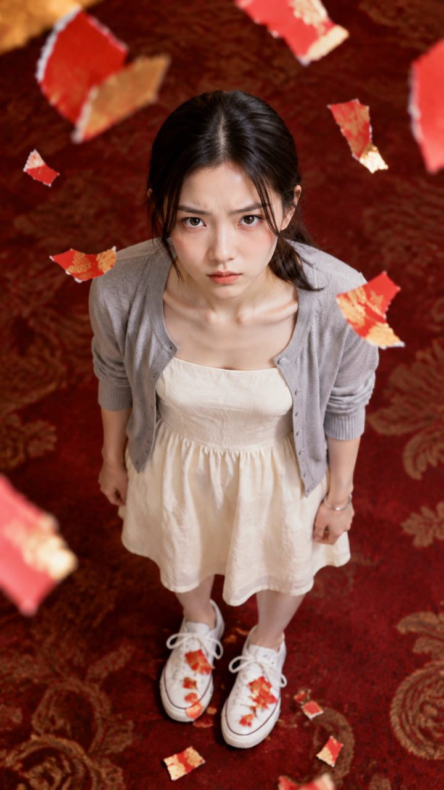
竖屏短剧
退婚当天，我继承了整条老街 · 第 1 集
90s · 9:16 · 30 镜 · 整片
审片：有备注通过
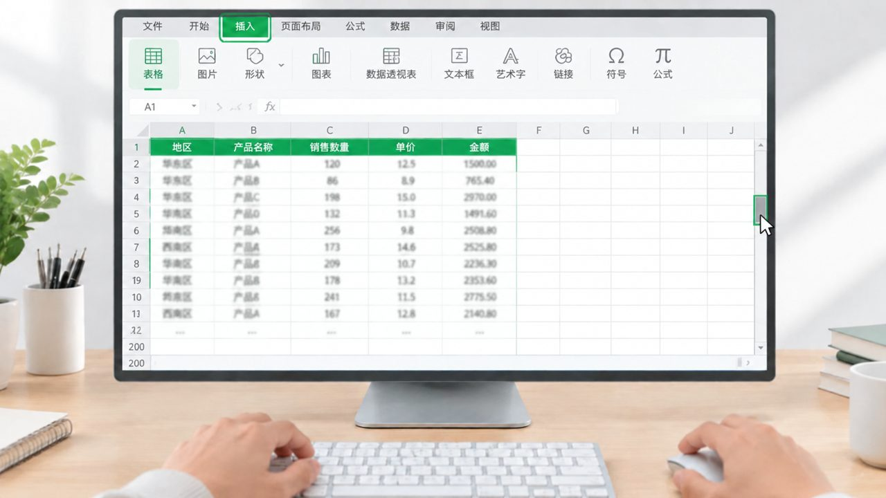
教程 / 操作演示
《5 分钟学会数据透视表》
90s · 16:9 · 14 镜 · 节选
审片：有备注通过
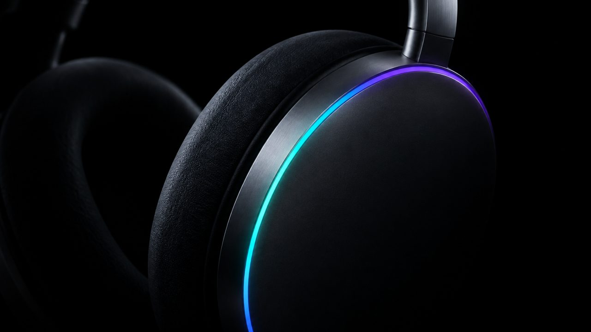
产品宣传片
Aurora X 主动降噪头戴耳机 ·《安静，可以戴上》
60s · 16:9 · 19 镜 · 整片
审片：有备注通过
文旅 / 城市宣传片
《沙溪，慢下来的茶马古道》
90s · 16:9 · 46 镜 · 节选
审片：有备注通过
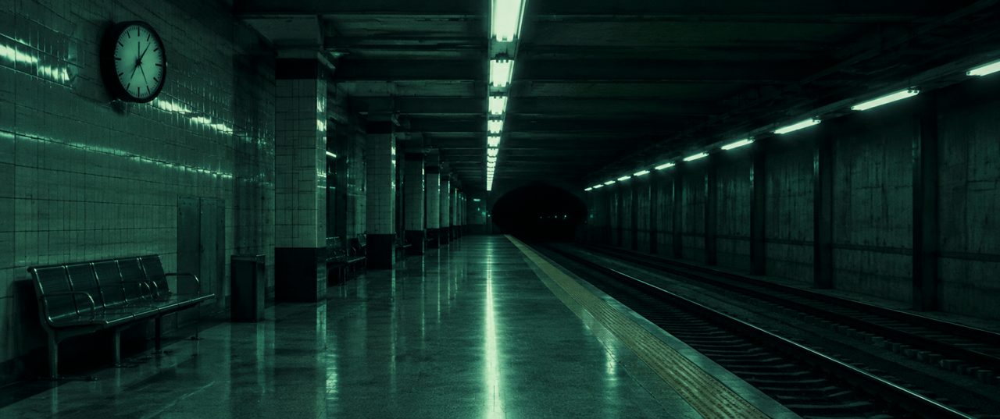
微电影 / 剧情短片
末班地铁
90s · 2.39:1 · 14 镜 · 节选
审片：有备注通过
动画短片
纸鹤邮差
60s · 16:9 · 12 镜 · 节选
审片：通过
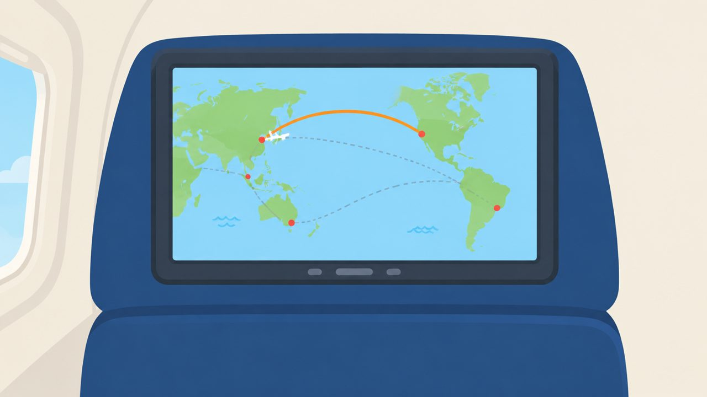
知识科普 / 解说
《为什么飞机航线是弯的》
90s · 16:9 · 28 镜 · 节选
审片：有备注通过
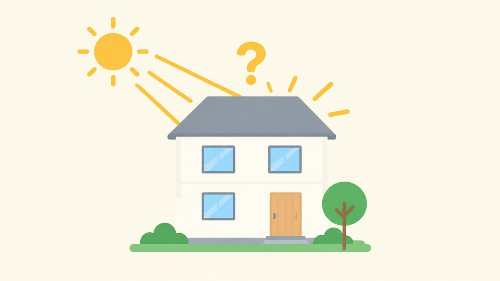
MG 动画 / 数据可视化
《一分钟看懂家庭光伏》
60s · 16:9 · 11 镜 · 整片
审片：有备注通过
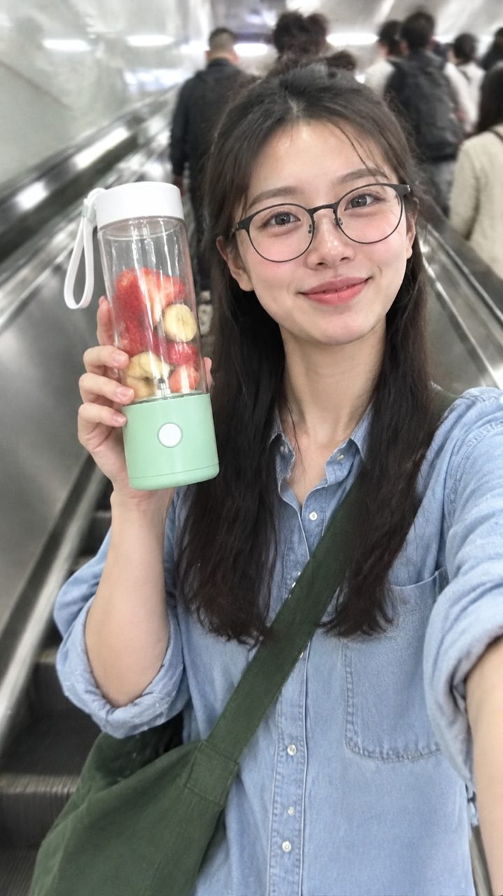
达人口播 / 带货种草
轻榨 ·《通勤党的随身榨汁杯》
30s · 9:16 · 10 镜 · 整片
审片：有备注通过
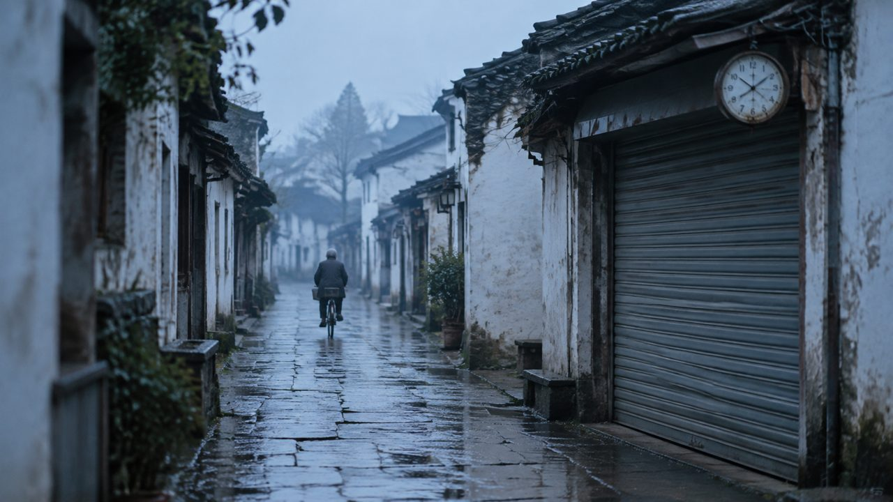
纪录片 / 人物纪实
《钟表铺的第四十年》
90s · 16:9 · 12 镜 · 节选
审片：通过
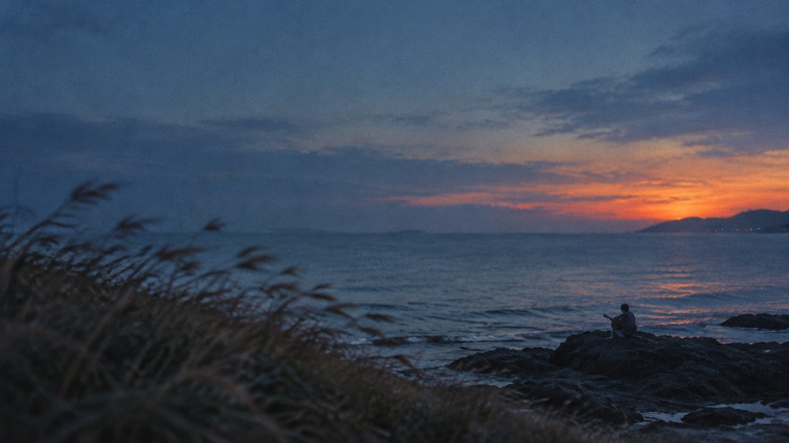
MV / 音乐短片
《海边的风》MV
60s · 16:9 · 20 镜 · 节选
审片：有备注通过
Vlog
《一个人去阿勒泰的第三天》
60s · 16:9 · 16 镜 · 节选
审片：有备注通过
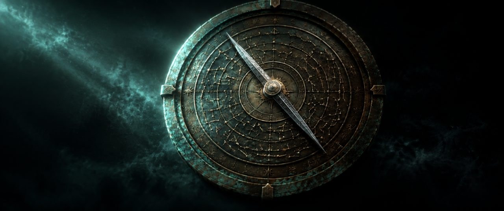
预告片 / 游戏 PV
星槎 · 首曝 PV
90s · 2.39:1 · 30 镜 · 整片
审片：有备注通过
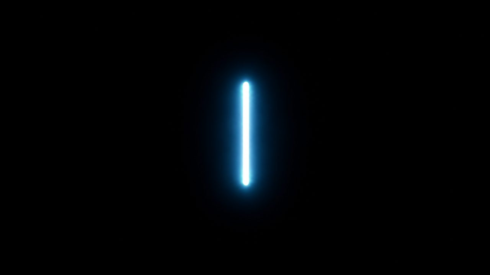
片头 / 活动开场片
2026 开发者大会 · 主会场开场片《从一行开始》
30s · 16:9 · 14 镜 · 整片
审片：有备注通过
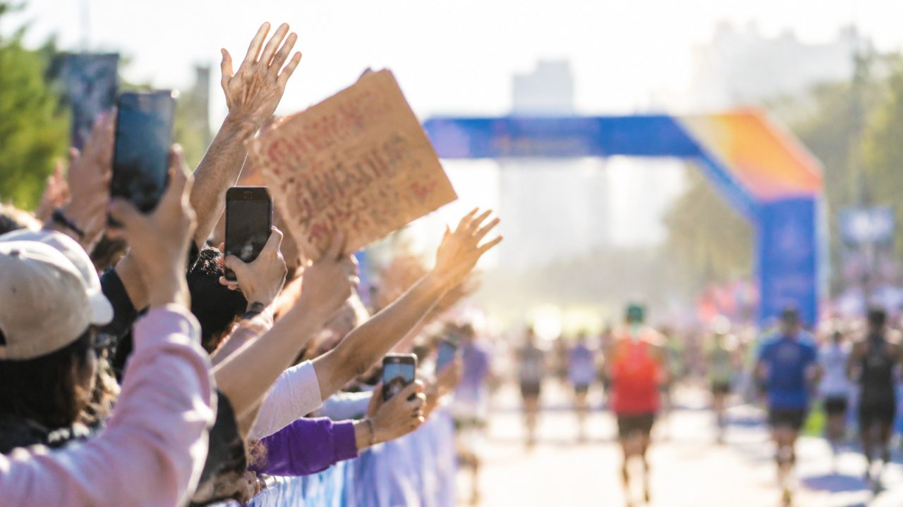
发布会 / 活动纪实
2026 城市半程马拉松 · 赛事回顾
90s · 16:9 · 24 镜 · 整片
审片：有备注通过